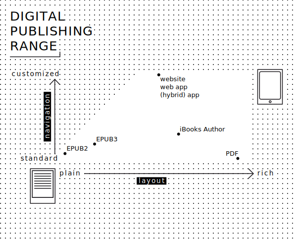

Within the world of art publishing, the catalogues produced by Fotomuseum Winterthur have acquired a solid reputation. Created to high standards of print design and reproduction quality, the catalogues are prime examples of the monograph. Working with designers such as Moiré, NOORD, Trix Wetter and publishers like Steidl, Nieves, Spector Books, and commissioning new texts for each catalogue, these books make sure that exhibitions staged at Winterthur reach a larger audience than its rather remote geographical location would otherwise suggest.
The firm commitment to the printed object also come with a down-side. The excellent, yet medium specific objects, are not easily translated into digital formats. And more than that, they need to be thought as complementary objects in a whole new hybrid publishing strategy, composed of paper and digital publications. With the public discourse around art taking place in large parts online, there are also a myriad of web channels not yet exploited by the Fotomuseum.
This publishing research will focus on one particular publication and exhibition—Manifeste! Eine andere Geschichte der Fotografie (Fotomuseum Winterthur, 13.09-23.11.2014), and propose transitional workflows for new and hybrid publishing strategies.
If we want to spread the knowledge contained in the exhibition and traditionally gathered in paper catalogues, we have to rethink the codex/monograph monopoly. This does not mean we want to do away with it, but rather that we want to come up with complementary objects and strategies, including digital ones.
The linearity and graphically rich nature of the catalogue is hard to translate in most digital formats, already if only thinking about file sizes. What we would like to do is to explode the (traditional conception of the) catalogue, look at the various components that make up the book and re-combine them in a hybrid—paper and digital—ecosystem.
Books from the post-Gutenberg era and digital publishing can easily be opposed. In this logic, the codex is demarcated and linear, whereas digital publishing is fragmented, interlinked and embraces the logic of the databases: elements have formal relations but no inherent narrative order. Upon closer scrutiny, the opposition does not really hold: many elements of the codex return in digital publishing models.
The Institute of Network Cultures provides a useful overview of the various digital publishing formats in their publication “From Print to Ebooks: a Hybrid Publishing Toolkit for the Arts”. The following graphic plots the most popular ones:

Image: Medamo and Kimmy Spreeuwenberg, p. 31. CC NC BY
The y-axis shows types of navigation ranging from standard (meaning, in this case, linear) to customised. The x-axis shows layout from plain to rich. It is not an accident that the option with the richest layout also has a very lineair navigation. A format like PDF is a page description language: the position of every element is described very carefully. Most other digital publishing formats are based on mark-up languages like HTML: these provide a description of the content that leave a lot more interpretation to the device that finally is going to display it.
Different pieces of content might be able to function in different contexts. It would be possible to reach various audiences and establish different relations through re-publishing different types of content in the most fitting channel—these decisions are of course made in collaboration with the social media & digital strategists.
The question is then: what contents make up the universe of the exhibition but did finally not make it into a printed edition, due to an economy of space for example. Which texts could have been written, which images could have been produced, but did not fit into the model of the book?
These questions are too late to ask in the context of an already finished publication but can be taken into account for newer projects. To have, for example, the exhibition’s curator publish a blog documenting the development of the exhibition and the catalogue, is a way to create “web-only” content that enriches and is complementary to both the catalogue and the exhibition. If we look at an exhibition as a constellation of people and art works coming together, creating a certain knowledge, this is another way yet of capturing and dissemenating this knowledge.
Thus, the proposition rethinks the traditional process of making publications. It thinks of it as identifying and creating a collection of objects (texts and images), and describing their relations. The editorial process first focusses on elaborating the selection and the relations between the objects, then identify formats that can be used to make it public.
Manifeste! is an exhibition that explores the historical relationships between photography and the manifesto, in a large conception of the term, bringing together statements from across the history of photography. Manifeste! exhibition provides a new perspective on photography and formulates an alternative history of the medium.
The manifesto is a specific kind of document, which often has a double status: both visual and textual. In this regard, the Manifeste! exhibition is an unusual one, exhibiting a huge amount of texts. To highlight this very important character of the manifesto document, the manifestos were literally blown up in the museum space, forming a big visual and textual composition. This lead to an inversion of the usual exhibition codes of photography museums, which usually displays images on the wall and captions underneath. In the Manifest! exhibition, the reproduction of the manifestos statements (mainly texts) are exhibited on the walls and the pictures accompanying them were displayed in vitrines
In addition to the fact that these documents are essentially (both) texts and images, the majority of the manifestos shown in the exhibition are printed documents, and most of them originally published in books and magazines. The exhibition catalogue was thus a natural format for them, and next to documenting the exhibition, it also constitutes an act of re-publication. The book starts with a visual entrée en matière: a selection of full-page images of some of the covers of the manifesto’s publications. After the usual introductory texts and essays, comes the main part of the book: high-quality facsimile pages of the manifestos, reproduced in their real size, with excerpts (indicated on the documents with an arrow) subsequently translated in German. Then comes a section reviewing all the publications where the manifestos were originally published, with cover, references and description. After about 400 pages, the book ends with a series of backcovers, mirroring the first part of the book. The inner fold of the backcover of the catalogue contains an index of the manifestos and table of contents. A separate (smaller) “reader” contains some translations in English.
Like the exhibition, the Manifeste! catalogue is a rather unusual publication for the Fotomuseum, and a particularly big challenge when it comes to digital publishing formats. The decision to treat texts both as text and as image is difficult for some kind of e-ink readers that are not good at displaying high resolution images, and even on bigger tablets the huge size of the files required would potentially be a problem.
This book thus makes a very good case study for hybrid publishing workflows, and it shows that is hard to imagine an automatic translation from one format to another. The translation process must be carefully thought out, as every editorial processes, and it requires consideration of the specificity of each medium.
As part of the study of the composing elements of the printed publication, we are working on the digital InDesign file from which the book was created. This file encodes all images and texts, as well as the layout of the book. For the this part of the case study, the Hybrid Publishing Consortium collaborates with Gerrit Imsieke from the Leipzig based company le-tex. With a software called Transpect (see details in the chapter Le-TeX and Transpect), we try to extract a structured HTML file out of the InDesign file, where the book is contained. This allows us to experiment with the inDesign file as a base format for many outputs (from ePub to web sites). This process will also be very useful for the treatment of previous publications, which all correspond to this configuration: the last version of the contents is in the InDesign document. That is, if the museum has access to the file.
The study and experiments conducted on the Manifeste! catalogue lead us to imagine a transition plan towards a more general hybrid publishing strategy for the Fotomuseum.
The changes brought on by new publication formats and possibilities do not only concern the final objects, the publications, but also the whole publishing process, its actors and how they work together. Publishers are rethinking their traditional publishing workflows and elaborating new hybrid publishing strategies.
The way in which the Winterthur catalogues like Manifeste! have been produced is similar to how many smaller art publishers work. The visual design is very important: the relation between form and content is tight. In the case of museum Winterthur, there is no fixed house style—they even work with multiple designers.
The museum, in this sense, works without templates. This does not mean that no optimisation at all is possible: programs like inDesign permit to hook into external Content Management Systems, through the generic exchange technology of XML. This is what larger publishers do: they build custom workflows to enable the sharing of elements between various formats of publications. But because art publishers require both more customisation and have smaller IT budgets, such solutions are hardly ever put in place.
The practical consequence then of this workflow, is that all of the knowledge that is produced during the production of the catalogue becomes encoded into one file, the inDesign file. Not only the visual design is stored in this file, also the canonical versions of the texts: since the proofs are created from inDesign, any corrections are often encoded with this program as well.
Because the inDesign is the digital representation of the knowledge represented by the catalogue (and thus the exhibition!), the Consortium wanted to find out how much of this knowledge could be extracted from the file, in order to be able to re-use it in other, digital, publishing contexts.
The Hybrid Publishing Consortium has built up a working relation with the Leipzig based company le-tex. Le-tex specialises in what they call ‘Content Engineering’. Basically, they come up with workflows for publishers for all parts of the process leading up to the publication. This means importing text formats into Content Management Systems, formally verifying them and allowing for proof-reading, version management and conversion strategies between the various digital and analog formats in use.
What is exciting about le-tex, besides their extensive experience, is the fact that they have Open Sourced a large part of their digital solutions. Transpect is an ‘open source framework for converting and checking documents’. Our close working relationship and the fact that their tools are Open Source makes us confident in suggesting le-tex’s tools as part of a hybrid publishing workflow.
What is special about Transpect specifically is the way in which it handles lay-out and styling information. Content Management Systems have a tendency to focus on the encoding and exchange of text, leaving styling to ephemeral templates. Transpect takes it upon itself to also translate the various forms in which layout and style can be encoded. Most importantly, it provides facilities for converting inDesign paragraph styles to CSS styles and vice versa.
The usual workflow with Transpect is to set up a ‘conversion pipeline’ from one format to another. This pipeline is then configured and tweaked to best accomodate the specificities of the input. For our experiment with the Manifeste catalogue, we first opted to convert the inDesign file to HTML. We chose HTML because it is the lingua franca of digital publishing: it is used both on websites and eBooks, and increasingly in mobile applications. It is easy to store and repurpose.
The caveat mentioned for art publishers becomes apparent again. While we experimented with converting the inDesign file of the Manifeste catalogue, we found ourselves adapting the pipeline to the specificities of the publication. Letex’s Gerrit Imsieke also came up with a number of changes we could make to the inDesign file itself.
Gerrit also provided a series of guidelines for designers working in inDesign, that make their files easier to process (we added these as an annex). We suggest that Winterthur asks the designers for upcoming catalogues to follow them.
The recommendations will make the process of extracting content easier—but it is probable that every single publication will still require a certain amount of customisation.
The following schema proposes a workflow for the upcoming publication (and the past publications), in which the paper publication is still the main source (last version stored in the INDD file after last proofreading).
The second step, for the next publications, is to consider the publication as a collection of multimedia contents: the different elements to be published by the Fotomuseum (images, legends, texts, videos) are selected and created, and the relations between these elements are described. In a period of transition, the elaboration and the design of the paper version and the digital ones are still quite separated.
…
For further publications, The aim is to reach a more global hybrid publishing strategy, that will give a greater coherence between all the formats, and more complementarity.
In this workflow, a new and central position appears, that of a hybrid art director/graphic designer who will take care of the publication strategy as a whole, and work on the coherence between all the formats chosen.
…
Going in the sense of the new digital strategy of the Fotomuseum, this new workflow puts the HTML format and the web database at the center of the publishing strategy. The HTML content becomes the source for all the materials, that are stored in a database with a versionning system, can be modified online through an editing interface (CMS), and then used in the different outputs.
This system answers the very practical question of the “after-design” proofreading modifications, problematic in every publication process: how to integrate the corrections in the design easily and safely? Where is the last version stored, and is it easily re-usable? Particularily in the context of hybrid (and efficient) publishing, a single source is essential. One source to rely on, and on which all the outputs can be based.
Versionning systems were developed in the context of programing culture, to keep trace of the modifications on a code file. These systems improve collaborative workflows, and make it easier to follow the changes in a file.
Transposed in a print-layout/graphic design context, the graphic designer could import all the datas again, in the layout file with the risk of loosing layout detail’s adjustments, or choose to add only the modifications, which are very easily identified with a versionning system…
For the text to make any sense at all post-scramble, it had to be ‘prepared,’ like pieces of lego, each already designed to fit together with other pieces in multiple ways,
says Umberto Eco on Tristano, a combinatory algorithmically generated novel written/programmed by Nanni Balestrini in 1966, of which Verso re-published 10,000 different versions (out of the 109,027,350,432,000 possible variations) in 2014.
Thinking the publication as a collection of contents interrelated allows more flexibility and modularity. It also enables potential future re-use of the information in another context. For example, a contributor could look for a picture in the Fotomuseum database and see in which previous publications it appeared, and maybe read a contextualised extract in which the picture is mentionned. This would also be an interesting feature for the public and educational purposes: being able to visualize a network around each work and understand its connections.
The aim of this workflow is to expand the possibilities of publication formats, and include them in a general strategy, to not have to re-invent the wheel at every publication. But all the formats won’t be necessary every time and that is where the work of the editor(s) is very important: choosing among the possibilities the ones that will make sense in relation to the content, and regarding each other.
The future of publications will be hybrid and multi-formats. Which doesn’t make things easy in terms of licencing. Museums will have to negotiate more extensive and open-ended permissions with rights holders.
An alternative to such extensive custom licence agreements would be to ask contributors to license their work under an open licence.
For instance, the Creative Commons license “Attribution-ShareAlike” or “CC BY-SA” allows the re-use of the work for any purpose and through any media, as long as the new use credits the author and license the new creations under the identical terms.
This enables an open-ended usage of the work by the museum. In addition, this enables new publishing strategies, and new possibilities of involvement for the public.
Our research shows that a new phase of digital strategy is taking hold in cultural organizations. Whereas the last five years saw them focus predominantly on social media marketing and engagement, we have identified a more recent shift to exploring mature digital channels. Examples of these are–online learning platforms, digital books, open licence content repositories and collaborative research platforms. They demonstrate that the Web has become the platform of choice for critical discourse. The shift we see expresses a horizontal tendency, where participants (audiences) are engaged as co-producers and invited to share and reuse content. (Hybrid Publishing Consortium)
Encouraging the contributors to publish their texts, pictures and videos with an open license will facilitate their re-use by the Fotomuseum in multi-format publishing and allow for more flexibility, for example with new formats that we don’t even know yet.
The use of such licenses also provides new possibilities for the public to access and get involved with the productions of the Fotomuseum. It enables a more widespread sharing of the knowledge produced and facilitates re-use for educational purposes.
As N.Katherine Hayles says, in her text Electronic Literature: What is it? (2007), readers come to digital work with expectations formed by print, including extensive and deep tacit knowledge of letter forms, print conventions, and print literary modes. Of necessity, [we] must build on these expectations even as it modifies and transforms them.
A printed publication, an ePub and a web publication can have very different cultural values and different uses for different publics. A big coffee-table catalogue with great reproductions will be acquired as a collection item, important for the artist and the institution to mark their presence in the landscape of art (libraries), and as a “legitimation” object. If it contains good texts by art historians and critics, it will as well touch a public of art-intellectuals peers. An interactive website providing tools to dive in the published content, zooms, vidéos, comments on details, etc, might not interest that much the collectors but be of great interest for education purposes. Of course, this categorization has limits and exceptions, but at first sight the identification of the publication object will be determinatory. The visual codes play a lot in this process of identification.
If all the contemporary formats of publication are very different, they are not incompatible. They are rather complementary, and a good hybrid publishing strategy can be efficient public-wise, both in terms of quantity (bigger public, more varied) and quality (one person can be interested in several formats responding to different needs and uses she/he has).
It builds connections.
Specific formats can then be imagined for the different programs and activities of the Fotomuseum.
The museum could develop a collection of small and very simple ePubs for individual essays by critiques (drawn from and at the same time advertising for the full catalogues), or transcripts of public events and lectures.
The PLAT(T)FORM presenting works from young photographers could have an ePub3 digital series of publication for each new artist, with the same design, to help promoting their work. Like publisher JRP|Ringier with its “First monograph” collection, all based on the same canvas.
Some specific exhibitions could be the occasion to develop a special web page/site where the visitor can go further in the works, and access materials, in an other temporality.
The digital formats allow for new modes of editing, of publishing and new ways for the public to ineract with the published material. Amongst many other possibilities:
Ethertoff by OSP: digital and paper publication for Constant’s VJ14; digital and paper magazine f-u-t-u-r-e
Oral Site enables users to read, edit and publish online multimodal publications that merge sound, image, text and graphics. Oral Site is both an instrument and a place where one can "expand" publication within an environment that encourages contributors to move beyond the classical written form and to practice new ways of dealing with text, orality, visuality, graphicality, temporality, spaciality, performativity etc.
“make your own catalogue”
My Highlights, experiment for the Stedelijk Museum, by nai010 publishers, Medamo and PUNTPIXEL. Custom digital version of the Stedelijk Museum Highlights Catalogue, as an app that generates personalized ePubs.
The Source Code, Jochen Roller, 2014: draws a map of your navigation, with an image and the url for each page/element visited.
?
the reader as co-producer
Beyond Social wiki-based webzine
The Iraq Study Group report, by The Future of the Book
Revolution A Reader by Publications Studio
An Inquiry into Modes of Existence
Visual Editions publishing and the web & paper book Where you are
Temporary Site online and paper magazine
Salt Online: “Make a book > ePub > PDF”.
Le Lecteur à l’oeuvre, Fondation Bodmer: boocs.
{kind=link}